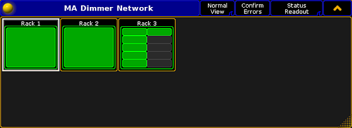
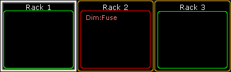
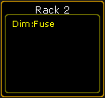
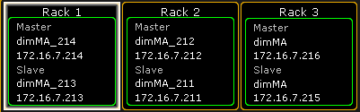
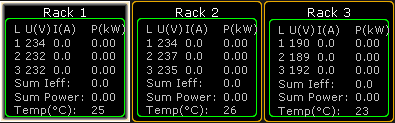

For more information on how to open the MA Dimmer Network see Network dimmer.
To toggle between the readout views, tap the Readout button in the title bar of the window MA Dimmer Network.
Status Readout
Status Readout displays the status of the NDP racks.
If the readout is set to Status Readout, the display of the racks stays unaffected.

Status Readout
For more information on the display of the racks in Status Readout of different views see Views.
Error Readout
To track errors, toggle the readout to Error Readout.
To do so, tap Status Readout.
The display of racks changes.

Track errors using Error Readout
The error message is displayed in red in the rack affected.
Hint:
Unlike in the Status Readout, confirming errors in the Error Readout displays the error message in yellow. For more information on on the confirmation of errors see Errors.

Confirm errors in Error Readout
Property Readout
Property Readout displays which NDP controls the corresponding rack.
To display the property of racks, tap Error Readout.
The button toggles to Property Readout and the display of the racks changes.

Property Readout
The racks display the name and the IP of the master and slave NDP.
Consumption Readout
To readout the consumption, toggle Property Readout to Consumption Readout.
To do so, tap Property Readout.
The button toggles to Consumption Readout.

Consumption Readout
The view displays the following consumption data:
Voltage
Current
Power
Temperature
Hint:
To display the consumption of single elements in the hierarchy, navigate down in the hierarchy while in the mode Consumption Readout. For more information on the hierarchy see Network dimmer.